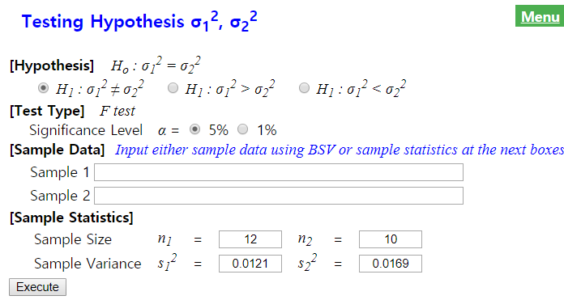
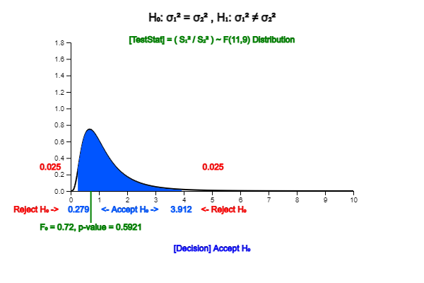
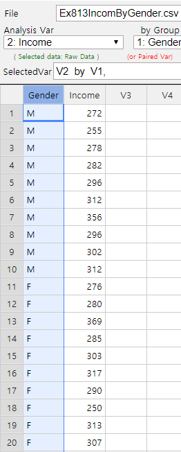
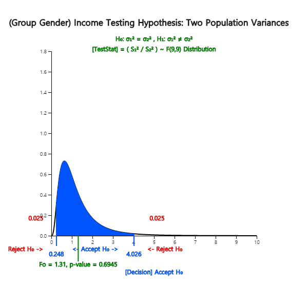
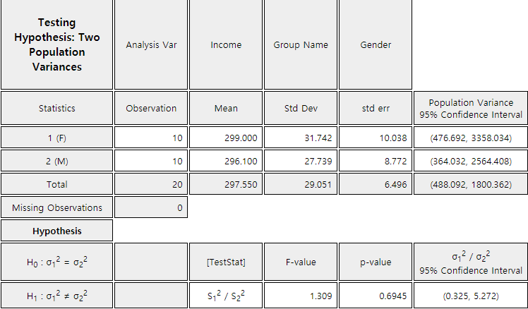

Consider following examples to compare two population variances.
- When comparing two population means in the previous section, we studied that if the sample size was small, the decision rule for testing hypothesis were different depending on whether two population variances were the same or different. So how can we test if two population variances are the same?
- The quality of bolts used to assemble cars depends on the strict specification for their diameters. Average diameters of bolts produced by two factories were said to be the same and if the variance of diameters is smaller, it is considered as superior production. How can you compare variances of the diameter?
When comparing variances (\(\sigma_1^2\) and \(\sigma_2^2\)) of two populations,
the ratio (\(\frac{\sigma_1^2}{\sigma_2^2}\)) of variances is calculated instead of comparing
the difference in variances. If the ratio of variances is greater, smaller, or equal to 1, you can see that
\(\sigma_1^2\) is greater, smaller, or equal to \(\sigma_2^2\). The reason for using the ratio of variances
instead of the difference of variances is that it is easy to find the sampling distribution of the
ratio of variances mathematically. If two populations follow normal distributions, and if \(n_1\) and \(n_2\)
samples are collected randomly from each population, the ratio of two sample variances \(S_1^2\) and \(S_2^2\) such as
$$
\frac{ \left( \frac{S_1^2}{\sigma_1^2} \right) } { \left( \frac{S_2^2}{\sigma_2^2} \right) }
$$
follows a \(F\)-distribution with the numerator degrees of freedom \(n_1 - 1\) and the
denominator degrees of freedom \(n_2 - 1\). Using this fact, we can perform testing hypothesis
on the ratio of population variances.
\(F\)-distribution is an asymmetrical distribution group with two parameters, the numerator
degrees of freedom and denominator degrees of freedom. <Figure 8.2.1> shows \(F\)-distributions
for different parameters.
<Figure 8.2.1> \(F\)-distribution of different degrees of freedom.
Testing hypothesis for two population variances can be performed using the \(F\)-distribution
as following Table 8.2.1.
Table 8.2.1 Testing hypothesis for two population variances
- Two populations are normally distributed -
Example 8.2.1
A company that produces a bolt has two plants. One day, ten bolts produced in Plant 1 were sampled
randomly and the variance of diameter was \(0.11^2\). 12 bolts produced in Plant 2 were sampled
randomly and the variance of diameter was \(0.13^2\). Test whether variances of the bolt from
two plants are the same or not with the 5% significance level. Check the test result using 『eStatU』.
Answer
The hypothesis of this problem is \(\small H_0 : \sigma_1^2 = \sigma_2^2 ,\; H_1 : \sigma_1^2 \ne \sigma_2^2 \),
and its decision rule is as follows:
$$ \small
\begin{multline}
\shoveleft \text{If } \frac {S_1^2}{S_2^2} < F_{n_1 -1, n_2 -1; 1-α/2} \text{ or }
\frac {S_1^2}{S_2^2} > F_{n_1 -1, n_2 -1; α/2} \text{ then reject } H_0
\end{multline}
$$
The test statistic using two sample variances and the percentile of \(\small F\)-distribution is as follows.
$$ \small
\begin{multline}
\shoveleft \frac {S_1^2}{S_2^2} = \frac{0.0121}{0.0169} = 0.716 \\
\shoveleft F_{n_1 -1, n_2 -1; 1-α/2} = F_{11,9;0.975} = 0.279 \\
\shoveleft F_{n_1 -1, n_2 -1; α/2} = F_{11,9;0.025} = 3.912 \\
\end{multline}
$$
Hence the hypothesis \(\small H_0\) can not be rejected and conclude that two variances are equal.
In 『eStatU』 menu, select ‘Testing Hypothesis \(\sigma_1^2 , \sigma_2^2\). At the window shown
in <Figure 8.2.2>, enter \(n_1 = 12, n_2 = 10, s_1^2 = 0.0121, s_2^2 = 0.0169\).
Click the [Execute] button to reveal the hypothesis test result shown in <Figure 8.2.3>.

<Figure 8.2.2> Data input for testing hypothesis of two population variances using 『eStatU』

<Figure 8.2.3> Testing hypothesis for two population variances using 『eStatU』
Example 8.2.2
(Income of college graduates, data of [Example 8.1.3])
Samples of 10 male and 10 female graduates of the college this year were taken and the average monthly income were examined as follows: Test whether variances of two populations are equal.
In 『eStat』, enter the gender and income in two columns on the sheet as shown in <Figure 8.2.4>. This type of data input is similar to all statistical packages. Once you entered the data, click on the icon for testing two population variances and select 'Analysis Var' as V2 and 'By Groups' as V1. Then a mean-standard deviation graph for each group will be appeared as in <Figure 8.2.5>.

<Figure 8.2.4> Data input for testing two population variances
<Figure 8.2.5> Dot graph and mean-standard deviation interval of each group
If you click the [F-Test] button int the options window below the graph, a test result graph using \(F\)-distribution such as <Figure 8.2.6> is appeared in the Graph Area and the result table is appeared as in <Figure 8.2.7> appears in the Log Area.

<Figure 8.2.6> Testing hypothesis for two population variances

<Figure 8.2.7> Result table of testing two population variances
Practice 8.2.1
Tire products from two companies are known to have the same average life span of 80,000km. However, there seems to be a difference in the variance. Sixteen tires from each of the two companies were randomly selected and run under similar conditions to measure their life span. The sample variance was 4,500 and 2,500, respectively.
Using 『eStatU』, test the null hypothesis that the variances of the tire life of two products are the same at the 5% significance level.
Multiple Choice Exercise
*** Choose one answer and click [Submit] button
8.7 Which sampling distribution is used to test whether two population variances are equal or not when populations are normally distributed?